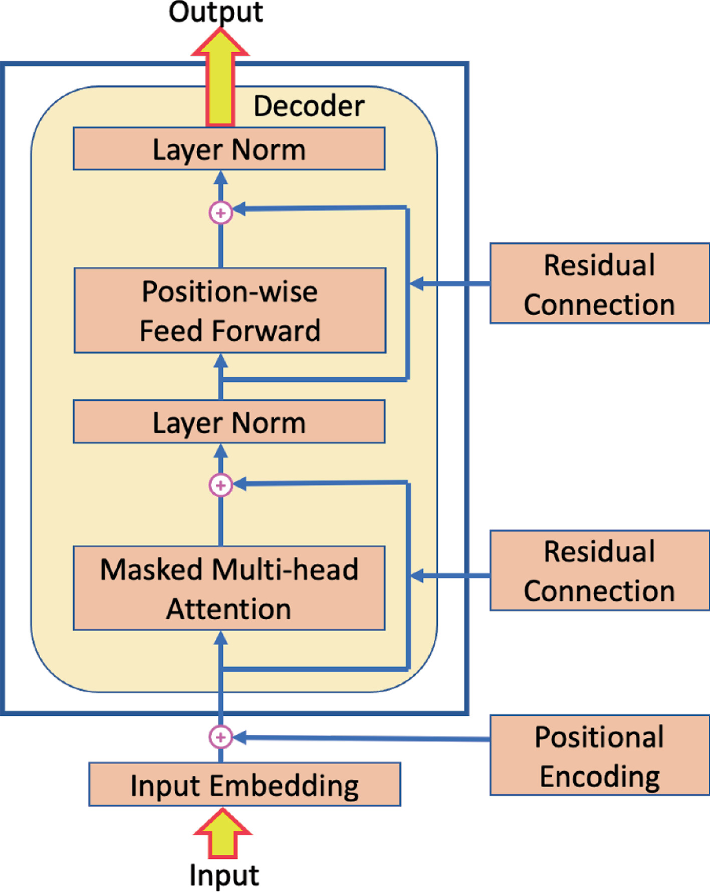
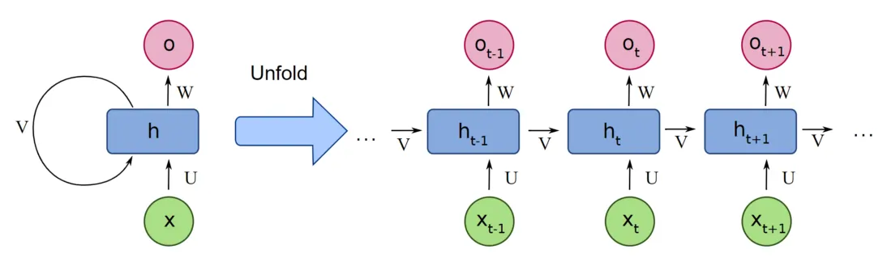
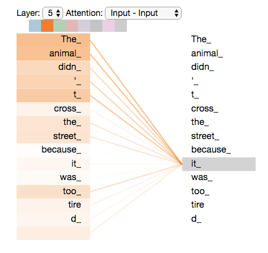
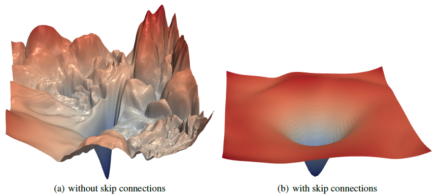
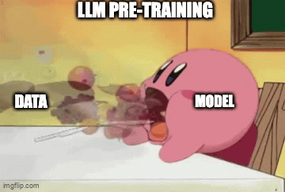
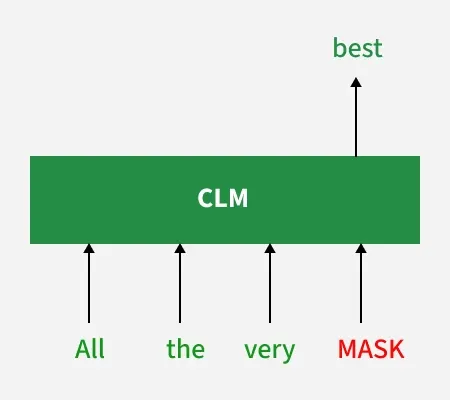
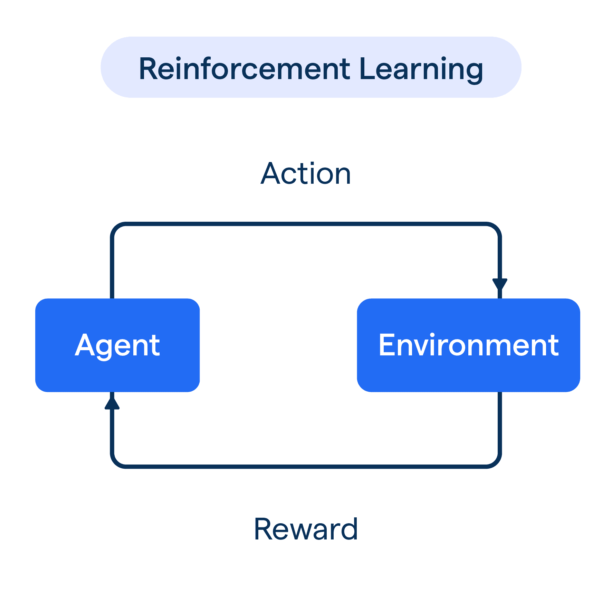
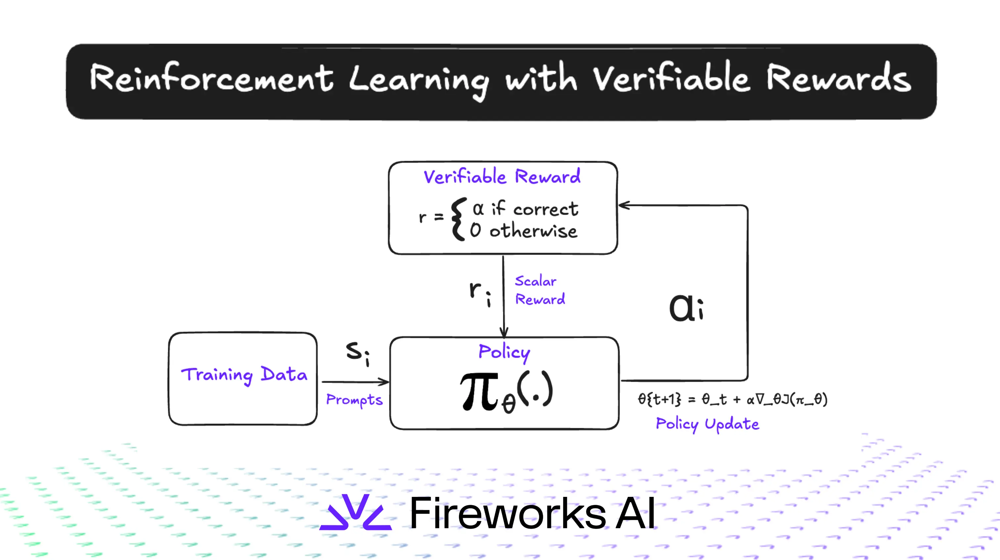

Architecture · Data · Training · Knowledge Updates
Authors
Arihant Sheth (DJSCE'24) & Claude Sonnet 4.6
Why attention, not RNNs. The "Strawberry" problem. LayerNorm & skip connections. Loss surfaces.
Memory math for 300B params. Where training data comes from. Why Scale AI is a $28B company.
Pre-training (CLM). SFT. Post-training: RLHF, RLAIF, RLVR. Why RL is hard. Real controversies.
The cutoff problem. Continuous pre-training. RAG. Long context windows.
Pre-requisites assumed: Neural networks, RNNs/LSTMs, basic Transformer architecture (attention, FFN).
SECTION 01
What actually matters, and why.

The Architecture that took the world by storm: Decoder-only Transformers
Compresses all prior context into a fixed-size hidden state h_t.
Analogy: passing a sticky note through 1000 people, each one rewrites it.

Every token directly attends to every other token.
Analogy: the original note is on a whiteboard. Everyone can read it simultaneously.

The model never sees raw characters. It sees tokens — sub-word chunks produced by BPE (Byte-Pair Encoding).
The character sequence is discarded at input
The model reasons over token embeddings — dense vectors, not characters
Counting letters requires reconstructing information that was never preserved
Key insight: The same model that writes essays, codes, and reasons about philosophy fails at this because of a pre-processing decision made before the model even runs.
See how the tokenizer splits "Strawberry" — and why the model never sees individual characters.
Instead of output = F(x), compute output = F(x) + x.
Normalizes activations across the feature dimension (not the batch).

SECTION 02
The unsexy part that determines everything.
| Component | Memory |
|---|---|
| Weights (fp16) | 600 GB |
| KV cache (per request) | ~2–8 GB |
| Minimum GPUs | ~8× H100 |
300B params × 2 bytes (fp16) = 600 GB
| Component | Memory |
|---|---|
| Weights | 600 GB |
| Gradients | 600 GB |
| Adam optimizer states | ~1.2 TB |
| Activations (backprop) | ~500 GB+ |
| Total | ~3–4 TB |
Training requires hundreds of A100/H100s with model + tensor parallelism. Inference can be served on far fewer — this is why pre-training happens once and inference is amortized across millions of users.
Me waiting for my model to finish training
Common Crawl — petabyte-scale snapshots of the internet. Heavily filtered (C4, RedPajama, FineWeb). Low quality raw, high quality filtered.
Books, Wikipedia, academic papers (ArXiv), legal docs, code (GitHub). High quality, limited volume.
LLM-generated text, reasoning traces, instruction-response pairs. Increasingly important — Phi-3, DeepSeek-R1 trained heavily on synthetic data.
Key principle: Data quality > data quantity past a certain point. This is why Common Crawl is filtered down from petabytes to hundreds of gigabytes of "clean" tokens before training.
Compute-optimal training: model size and token count should scale together. A 300B model needs ~6 trillion tokens to be compute-optimal — most models were undertrained before this finding.
Benchmark test sets (MMLU, HumanEval) exist on the internet → they end up in training data → benchmark scores are inflated. An active research problem.

After pre-training, models need human feedback to become useful assistants. Specifically:
You can't train a model that's better than humans at rating responses if you can't reliably get expert-level ratings at scale.
Operationalizes human labeling at industrial scale. Manages thousands of contractors globally. Provides the labeled datasets that power RLHF for OpenAI, Anthropic, Meta.
Matches AI companies with skilled contractors — PhD-level annotators for math, medicine, law. The premium tier of the same market. As models tackle harder domains, the value of domain-expert labelers explodes.
The "human in the loop" is not a temporary fix — it's a structural part of how aligned models are built.
SECTION 03 — MAIN EVENT
Pre-training → SFT → Post-training (RL)
$10M–$100M+. Done once. GPT-4, Llama 3, Claude 3 took months on thousands of GPUs.
$10k–$1M. Done periodically with new instruction data.
$100k–$10M. Iterative. Most models go through multiple rounds.
Given tokens [t₁, t₂, ..., tₙ₋₁], predict tₙ.
Cross-entropy over the vocabulary at every position. No labels needed — the text itself is the supervision.
The magic: to predict the next word reliably, the model must learn grammar, facts, reasoning, and world knowledge — all as a side effect of a single objective.
Chinchilla law (2022): A 300B model is compute-optimal at ~6T tokens. Most early GPT models were significantly undertrained — we were wasting compute on bigger models instead of more data.

Causal Language Modeling
Fine-tune the pre-trained model on (instruction, ideal response) pairs.
All weights updated. Expensive but highest quality. Used by OpenAI, Anthropic for main models.
Base weights frozen. Low-rank adapter matrices trained on top. 100× cheaper. Used for domain adaptation, open-source fine-tuning.
What SFT does NOT do: it doesn't make the model safer or more aligned. It makes it sound like an assistant — a very different thing.
Humans rank responses A vs B. Train a reward model on these rankings. Use RL to make the LLM maximize the reward model's score.
Used by: ChatGPT, Claude, Llama
Replace human raters with another AI model generating preference judgments. 10–100× cheaper. Anthropic's Constitutional AI is a variant.
Used by: Anthropic (CAI), Gemini, Qwen*
For tasks with objective correctness — math, code, proofs. No reward model needed: the environment itself provides signal.
Used by: o1, o3, DeepSeek-R1
Why this step defines the product: Pre-training gives capability. SFT gives format. Post-training gives personality, safety, and usefulness. Claude sounds like Claude, GPT sounds like GPT — because of this step.

The basic Reinforcement Learning loop
KL penalty: during RL, the model is penalized for drifting too far from the SFT distribution. Without this, the model degenerates — it learns to game the reward model rather than actually improve.
RLAIF variant: Replace human raters with a stronger AI. Anthropic's Constitutional AI uses a set of written principles — the AI critiques itself against those principles rather than asking humans each time.
Multiple reports (2024–2025) alleged that Qwen, DeepSeek, and other Chinese labs generated synthetic training data by:
This is explicitly prohibited by Anthropic's and OpenAI's Terms of Service — but enforcement at scale is technically very hard.
Billions spent building RLHF pipelines with human raters. If a competitor can shortcut this by querying your API, your moat shrinks dramatically.
If models are trained on outputs of other models, bad behaviors can be distilled forward. "Model collapse" is a real concern at scale.
This shows that the RL feedback signal is the moat — not the architecture, which is largely public. It's the preference data that's proprietary.
Learn more about the Anthropic distillation attacks ⤴
For certain domains, you don't need a reward model — the environment verifies correctness automatically.
No reward model → no reward hacking. The signal is ground truth, not a proxy trained on human preferences.
Trained with RLVR to produce long internal "chains of thought" before answering. The model learns to reason not from human demonstrations but from whether its final answer is correct.
Open-source. Used RLVR on math and coding. Showed that long chain-of-thought reasoning can emerge from RL alone — without supervised reasoning traces. The thinking behavior isn't taught; it's discovered.

RLVR: RL with Verifiable Rewards
The model finds a policy that scores high on the reward model without actually being better. Example: verbose responses that appear thorough to human raters but add no real information. The model is optimizing the proxy, not the goal.
After RL updates, the model's outputs drift far from the SFT distribution. Without the KL penalty, it can degenerate into repetition, incoherence, or bizarre behaviors. Goodhart's Law: when a measure becomes a target, it ceases to be a good measure.
A response is 500 tokens long. The reward signal is one scalar at the end. Which token caused the reward? Assigning credit across a long sequence is a hard credit assignment problem.
As the LLM improves, it finds failure modes in the reward model that haven't been patched. The reward model was trained on a fixed distribution; the RL'd model is now out-of-distribution for it.
OpenAI — Faulty Reward Functions in the Wild — a boat racing agent that scores higher by going in circles and catching fire than by finishing the race.
SECTION 04
Pre-training is frozen in time. What do you do?
Ask Claude about something that happened last week and it genuinely doesn't know — not because it forgot, but because the information was never in its training data.
Periodic smaller-scale pre-training on new data from a checkpoint. Updates weights with new knowledge.
Don't bake it in weights — retrieve at inference time. More practical for fast-changing facts.
Paste the document in. Give the model a search engine. Knowledge lives outside the model entirely.
The hard problem: Catastrophic forgetting. The model overwrites old knowledge while learning new data. Managing the data mixture ratio (new:replay) is the main engineering challenge.
Companies like Bloomberg (BloombergGPT), Mistral (finance), and various medical AI labs took a base LLaMA model and ran CPT on domain-specific corpora. Result: much better domain performance without training from scratch.
CPT is significantly cheaper than full pre-training but more expensive than SFT. The tradeoff: deep knowledge integration (CPT/pre-train) vs. surface-level retrieval (RAG) vs. in-context injection (long context).
| Phase | Objective | Data scale | What it gives the model |
|---|---|---|---|
| Pre-training | Next-token prediction | Trillions of tokens | World knowledge, reasoning, language |
| SFT | Instruction following | 10k–100k pairs | Correct format, basic helpfulness |
| RLHF | Maximize human preference | 100k+ comparisons | Aligned behavior, personality |
| RLAIF | Maximize AI-judge preference | Scalable (AI-generated) | Safety, constitutional behavior |
| RLVR | Maximize verified correctness | Env. feedback | Deep reasoning, chain-of-thought |
| CPT | Next-token prediction (new data) | Billions of new tokens | Fresh knowledge, domain expertise |
The mental model: Pre-training fills the model with knowledge. SFT shapes how it communicates. Post-training (RL) defines who it is. CPT keeps it relevant. Each phase is necessary — none is sufficient alone.
Chain-of-thought looks convincing but can be entirely post-hoc rationalization. The model may have already decided the answer and then "thought" its way there.
If you use AI A to train AI B, and AI A has biases, B inherits them — amplified. As models get stronger, self-distillation could propagate failures at scale.
Models trained heavily on synthetic data from other models eventually collapse — the distribution narrows over generations. Finding the right real:synthetic ratio is an open research question.
Can a model learn to reason at pre-training, or does reasoning emerge from RL? DeepSeek-R1 suggests RL — but the pre-trained model's capability is the floor. Still being studied.
Topics we deliberately skipped: evaluation benchmarks, inference optimization (KV caching, speculative decoding, quantization), multi-modal training, agents.
Attention Is All You Need — Vaswani et al., 2017
GPT-1: Language Understanding — Radford et al., 2018
BERT — Devlin et al., 2018
Scaling Laws for Neural LMs — Kaplan et al., 2020
Chinchilla / Training Compute-Optimal LLMs — Hoffmann et al., 2022
InstructGPT — Ouyang et al., 2022
Learning to Summarize w/ Human Feedback — Stiennon et al., 2020
Constitutional AI — Bai et al., 2022
PPO: Proximal Policy Optimization — Schulman et al., 2017
DeepSeekMath / GRPO — Shao et al., 2024
DeepSeek-R1 — DeepSeek AI, 2025
DDPM: Denoising Diffusion Probabilistic Models — Ho et al., 2020
Diffusion-LM (text diffusion) — Li et al., 2022
Andrej Karpathy — Zero to Hero (video series)
nanoGPT — minimal GPT implementation
tiktoken · trl (HuggingFace) · LM Evaluation Harness · vLLM
Karpathy — "Let's build GPT from scratch" · "State of GPT" (2023) · Ilya Sutskever NeurIPS lectures